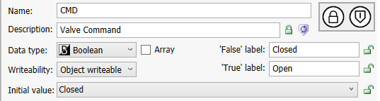
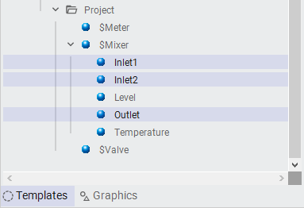

Containment hierarchy showing how objects are nested — the Galaxy Model tree reflects the physical equipment structure (Module 4, page 4-48)
Source: AVEVA Application Server 2023 Training Manual, Module 4, Section 4 + Lab 8 (pages 4-45 to 4-66)
How objects contain other objects to form composite equipment — and building a complete Mixer model using containment in Lab 8.
Reference: Module 4, Section 4 (pages 4-45 to 4-47)
In the previous lessons, we modeled individual equipment components — pumps, valves, sensors, and instruments — as separate Galaxy objects. In a real plant, however, these components don't exist in isolation. A mixer contains an agitator, inlets, an outlet, level and temperature sensors, and pumps. Containment is the mechanism that lets you model these physical relationships directly in the Galaxy.
Containment is not just organizational grouping. When an object is contained within another object:
Plant.Production.Line1.Mixer100.Pump1_001)| Relationship | What It Does | When to Use |
|---|---|---|
| Containment | Parent physically contains child — child is part of the parent's design | Components that are integral to an equipment piece (sensors built into a mixer, pumps attached to a vessel) |
| Reference | One object references another by attribute path — objects remain separate | Objects that need to read/write data from other objects but are not physically part of them |
| Inheritance | Child template derives from parent template — shares structure and behavior | Creating reusable equipment templates (all pumps share common attributes) |
Reference: Module 4, Section 4 (pages 4-48 to 4-50)
When you place an object inside another object, the contained object's fully qualified name (FQN) includes the entire containment path. This naming convention is automatic — you don't build it manually.
Consider the complete Mixer100 deployment hierarchy:
| Fully Qualified Name | Object Type | Role |
|---|---|---|
Plant.Production.Line1.Mixer100 | Mixer template instance | Parent — the mixer unit |
...Mixer100.Agitator_001 | Agitator | Contained child — mixing motor |
...Mixer100.Inlet1_001 | Inlet | Contained child — first inlet valve |
...Mixer100.Inlet2_001 | Inlet | Contained child — second inlet valve |
...Mixer100.Outlet_001 | Outlet | Contained child — outlet valve |
...Mixer100.Pump1_001 | Pump | Contained child — inlet pump 1 |
...Mixer100.Pump2_001 | Pump | Contained child — inlet pump 2 |
...Mixer100.Level_001 | Level sensor | Contained child — level measurement |
...Mixer100.Temperature_001 | Temperature sensor | Contained child — temperature measurement |

$Plant object and flows down through each level of containment. The dot-separated path mirrors the hierarchy exactly. This makes it easy to locate any object and understand its position in the plant structure.
Containment is defined by the Container attribute on any object. When you drag an object onto another in the Model pane, or when you set the Container attribute in the Object Viewer, you establish the containment relationship.
Reference: Module 4, Section 4 (pages 4-51 to 4-53)
Containment provides several practical benefits for building and managing a Galaxy:
Me.Pump1_001.Running)Reference: Module 4, Lab 8 (pages 4-54 to 4-66)
This lab brings together everything learned so far — template creation, inheritance, attribute configuration, and containment — into a single comprehensive equipment model. The Mixer is the most complex piece of equipment in the training Galaxy, and modeling it properly demonstrates how all these concepts work together.

Reference: Module 4, Lab 8 (pages 4-55 to 4-57)
The Mixer template serves as the parent object that will contain all sub-components. It defines the mixer's own attributes (name, status, mixing speed) as well as the structural framework for containment.
Step 1a: In the Galaxy Model pane, navigate to the $Equipment area. Right-click and select New → Object. Choose the appropriate parent template (typically $Equipment or a derived equipment template).
Step 1b: Name the new object Mixer100. This is the instance — not the template — representing a specific mixer in the plant.

Step 1c: Set the Container attribute on Mixer100 to place it under the correct parent in the hierarchy (e.g., under Line1).

Reference: Module 4, Lab 8 (pages 4-57 to 4-60)
Now comes the core of containment — adding all the component objects inside the Mixer. Each component is created as a separate object, then placed inside the Mixer via its Container attribute.
Step 2a: Create the following contained objects inside Mixer100:
| Object Name | Template | Purpose |
|---|---|---|
Agitator_001 | Agitator template | Mixing motor / agitator |
Inlet1_001 | Inlet template | First material inlet valve |
Inlet2_001 | Inlet template | Second material inlet valve |
Outlet_001 | Outlet template | Discharge outlet valve |
Pump1_001 | Pump template | Inlet pump — material feed 1 |
Pump2_001 | Pump template | Inlet pump — material feed 2 |
Level_001 | Level sensor template | Mixer level measurement |
Temperature_001 | Temperature sensor template | Mixer temperature measurement |
Step 2b: For each object, set its Container attribute to Plant.Production.Line1.Mixer100. You can do this by dragging the object onto Mixer100 in the Model pane, or by editing the Container field in the Object Viewer.

Reference: Module 4, Lab 8 (pages 4-60 to 4-63)
With all components in place, the next step is configuring each contained object's unique attributes — I/O connections, alarm thresholds, engineering units, and setpoints.

Key attribute configurations per component:
| Component | Key Attributes to Configure |
|---|---|
| Agitator_001 | Running status I/O link, speed setpoint, motor fault alarm |
| Inlet1_001 / Inlet2_001 | Valve open/close I/O link, flow rate, valve fault alarm |
| Outlet_001 | Valve open/close I/O link, flow rate, valve fault alarm |
| Pump1_001 / Pump2_001 | Pump running I/O link, flow rate, pump fault alarm, trip alarm |
| Level_001 | Level input I/O link, high/low alarm setpoints, engineering units (% or L) |
| Temperature_001 | Temperature input I/O link, high/low alarm setpoints, engineering units (°C or °F) |

Step 3a: Open each contained object in the Object Viewer. Configure the I/O link attributes to point to the appropriate data source (OPC tags, simulation server tags, or direct references).
Step 3b: Set alarm thresholds for the Level and Temperature sensors. These will trigger alarms when values exceed the configured limits.
Step 3c: Set engineering units on all analog attributes so that values display correctly in the Object Viewer and any connected HMI.


Reference: Module 4, Lab 8 (pages 4-64 to 4-66)
With all attributes configured, deploy the Mixer and verify that all contained objects come up correctly.
Step 4a: Right-click on Mixer100 in the Galaxy Model and select Deploy. Because Mixer100 contains all the child objects, deploying the parent automatically deploys every contained child.

Step 4b: Open the Object Viewer for Mixer100. Verify that:


Step 4c: Verify the deployment status shows successful for all objects. If any contained object fails to deploy, check its I/O link configuration and Container attribute.
Reference: Module 4, Lab 8 (page 4-66)


Congratulations — you have completed Lab 8 and Module 4. The Mixer model demonstrates how all the concepts from this module come together:
Q1: What is containment in Application Server, and how does it differ from a reference relationship?
Containment means one object physically contains another — the child is part of the parent's design and is deployed/deleted with it. A reference is a data link between two independent objects that remain separate in the Galaxy hierarchy.
Q2: If Mixer100 contains Pump1_001, what is Pump1_001's fully qualified name?
Plant.Production.Line1.Mixer100.Pump1_001
Q3: What happens when you deploy a parent object that contains children?
All contained child objects are deployed automatically as part of the deployment — you do not need to deploy each child individually.
Q4: What attribute on an object defines its containment relationship?
The Container attribute — it specifies the fully qualified name of the parent object that contains this object.
Q5: How many components does the Mixer100 model contain in Lab 8?
Eight components: Agitator_001, Inlet1_001, Inlet2_001, Outlet_001, Pump1_001, Pump2_001, Level_001, and Temperature_001.
Q6: What is a practical rule of thumb for deciding whether to use containment vs. a reference?
If you would need a wrench to remove component X from equipment Y in the real world, use containment. If X and Y just need to share data but are physically separate, use a reference.
Click each answer to reveal it.
Plant.Production.Line1.Mixer100.Pump1_001).Next: Lesson 15 — Module 5